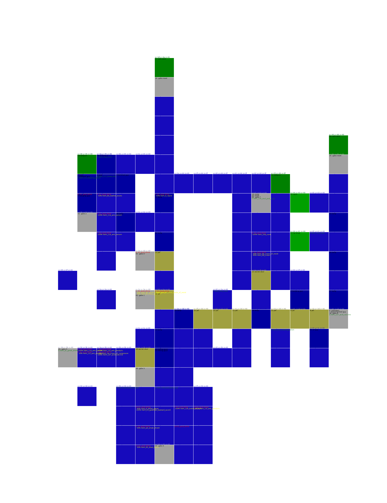
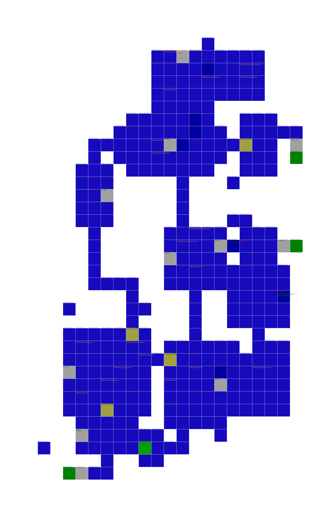
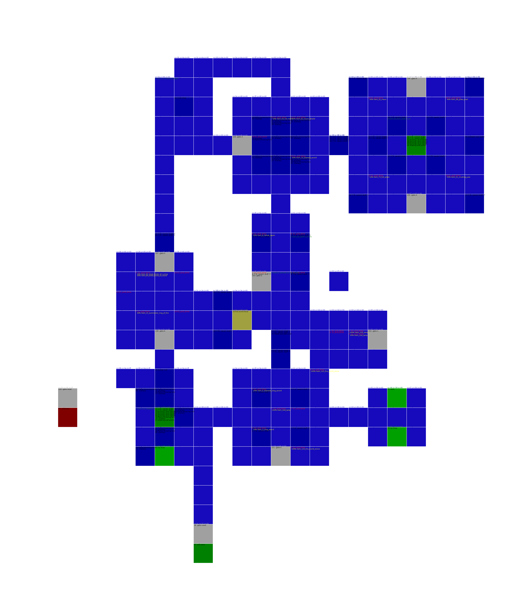
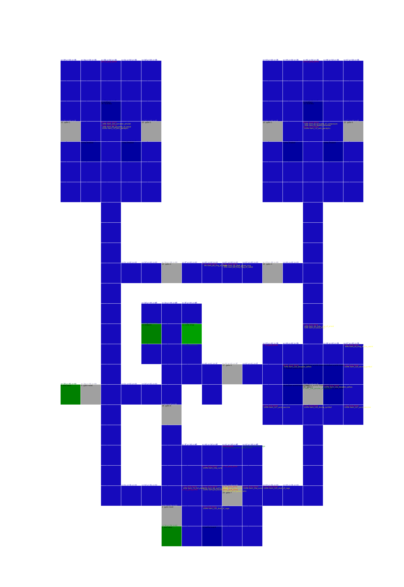
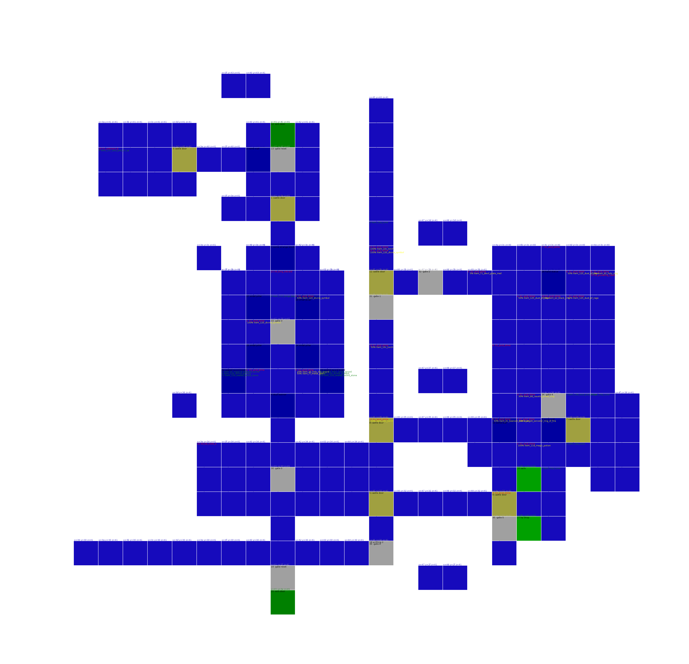

Human World
human_world_solitary_region
Item Memory used 7
Creatures score 210
0 item_11c_healing_potion
1 item_136_soul_pod_5_sp
2 item_11c_healing_potion
3 item_f_broad_sword
4 item_122_evil_eye
5 item_11c_healing_potion
7 item_11f_anti_paralytic
8 item_11e_anti_venom
9 item_ac_great_shield

human_world_hidden_region
Item Memory used 8
Creatures score 44
0 item_11c_healing_potion
1 item_7e_metal_glove
2 item_a4_small_shield
3 item_11d_magic_potion
4 item_11c_healing_potion
5 item_5f_magical_leather_armor
6 item_12b_pitcher_of_nadya
7 item_c4_summoner_ring_of_fire
8 item_47_cap
9 item_a3_small_shield
a item_11c_healing_potion
b item_11d_magic_potion
c item_11c_healing_potion
d item_11c_healing_potion

human_world_forgotten_region
Item Memory used 8
Creatures score 44
0 item_a7_large_shield
1 item_11c_healing_potion
2 item_39_axe
3 item_11c_healing_potion
4 item_11c_healing_potion
5 item_94_steel_boots_of_resist
6 item_7b_leather_glove
7 item_9_rapier
8 item_68_plate_mail
9 item_33_crushing_mace
a item_11c_healing_potion

human_world_cursed_region
Item Memory used 6
Creatures score 48
21 100% 0x50 0a_guardian_a pw80 42 103 89 110 93 72 36 a15 a16 m0 a30 a33 a91
30 100% 0x30 04_fat_mole_a pw0 0 0 0 0 0 0 0 a0 a0 m0
0 item_10c_torch
1 item_120_divine_symbol
2 item_128_spirit_book
3 item_10a_cune
4 item_a_rapier
5 item_11c_healing_potion
6 item_11c_healing_potion
7 item_10a_cune

Earth World
earth_world_rotting_cavern
Item Memory used 6
Creatures score 39
30 100% 0x20 0a_blank pw0 0 0 0 0 0 0 0 a0 a0 m5
0 item_34_shining_mace
1 item_11e_anti_venom
2 item_10a_cune
3 item_9c_fiery_leg_guard
4 item_125_dust_of_rage
5 item_11c_healing_potion
6 item_11c_healing_potion
7 item_11c_healing_potion

earth_world_poisonous_cavern
Item Memory used 9
Creatures score 68
20 100% 0x10 00_duhrin pw65 124 92 80 70 86 58 30 a0 a0 m8
30 100% 0x20 05_blank pw0 0 0 0 0 0 0 0 a0 a0 m0
31 100% 0x70 04_auriel_b pw150 160 150 65 65 65 65 65 a75 a70 m9
32 100% 0x50 0b_blank pw0 0 0 0 0 0 0 0 a0 a0 m0
33 100% 0x50 0a_blank pw0 0 0 0 0 0 0 0 a0 a0 m7
0 item_11c_healing_potion
1 item_11f_anti_paralytic
2 item_11d_magic_potion
3 item_12f_spirit_key
5 item_11c_healing_potion
6 item_ed_mind_bracelet
7 item_10a_cune
8 item_126_bottle_of_light
a item_12c_pitcher_of_nadya_hp
b item_10a_cune
1c item_11c_healing_potion
1d item_124_poison_vaccine

earth_world_stone_cavern
Item Memory used 6
Creatures score 53
13 100% 0x25 0c_dybbuk pw65 60 42 80 80 78 76 68 a12 a14 m10
30 100% 0x50 00_dybbuk pw60 70 40 80 80 78 76 68 a12 a14 m10
31 100% 0x0 04_dybbuk pw60 70 40 80 80 78 76 68 a12 a14 m10
32 100% 0x0 04_dybbuk pw60 70 40 80 80 78 76 68 a12 a14 m10
0 item_d3_dark_ring
1 item_11c_healing_potion
2 item_ff_amulet_of_composure
3 item_136_soul_pod_5_sp
4 item_137_soul_pod_53_sp
5 item_11c_healing_potion
6 item_11d_magic_potion
7 item_11e_anti_venom

earth_world_quaking_cavern
Item Memory used 8
Creatures score 48
0 item_11e_anti_venom
1 item_139_soul_pod_14_sp
2 item_10e_sacred_feather
3 item_27_great_sword
4 item_139_soul_pod_14_sp
5 item_11c_healing_potion
6 item_122_evil_eye
7 item_11d_magic_potion
8 item_11c_healing_potion
9 item_10a_cune

earth_world_false_pit_cavern
Item Memory used 10
Creatures score 58
b 100% 0x30 08_guardian_b pw60 42 125 62 178 179 124 63 a15 a16 m0 a92 a70 a148 a92 a70 a218
c 100% 0x30 08_guardian_b pw60 42 125 62 178 179 124 63 a15 a16 m0 a92 a70 a148 a92 a70 a218
0 item_11d_magic_potion
1 item_123_fire_world_stone
2 item_10e_sacred_feather
3 item_11d_magic_potion
4 item_9b_harden_leg_guard
5 item_11e_anti_venom
6 item_11c_healing_potion
7 item_112_key_of_knowledge
8 item_128_spirit_book
9 item_11c_healing_potion
a item_136_soul_pod_5_sp
b item_11c_healing_potion
c item_120_divine_symbol
d item_11c_healing_potion

earth_world_hostile_rock_cavern
Item Memory used 4
Creatures score 49
21 100% 0x10 04_dread_knight pw115 100 85 102 150 130 128 95 a45 a40 m11 a190 a145 a112 a110 a155 a245
100% item_11c_healing_potion
0 item_10a_cune
1 item_110_fiery_key
2 item_10a_cune
3 item_136_soul_pod_5_sp
4 item_11c_healing_potion

Fire World
fire_world_burning_cavern
Item Memory used 4
Creatures score 102
0 item_11c_healing_potion
1 item_f0_guardian_bracelet
2 item_10a_cune
3 item_10a_cune
4 item_10c_torch

fire_world_molten_cavern
Item Memory used 8
Creatures score 122
21 100% 0x10 02_dead_abraxus pw185 185 185 200 40 120 130 140 a80 a90 m12
30 100% 0x10 00_abraxus pw85 85 85 600 10 100 100 100 a80 a90 m12
31 100% 0x5 0c_fat_mole_c pw0 0 0 0 0 0 0 0 a0 a0 m13
32 100% 0x5 08_fat_mole_b pw0 0 0 0 0 0 0 0 a0 a0 m13
0 item_c0_gothic_shield_of_power
1 item_2b_fiery_great_sword
2 item_11e_anti_venom
3 item_cb_balance_ring_of_frost
4 item_120_divine_symbol
5 item_127_acid_vaccine
6 item_11c_healing_potion
7 item_71_devil_plate_mail

fire_world_phoenix_cave
Item Memory used 10
Creatures score 0
0 item_11c_healing_potion
1 item_11c_healing_potion
2 item_8b_deadly_arm_guard
3 item_81_fiery_gauntlet
4 item_12e_dorados_ashes
5 item_11e_anti_venom
6 item_7f_metal_glove
7 item_f6_harden_bracelet
8 item_11e_anti_venom
9 item_10a_cune
a item_10a_cune
b item_96_swift_steel_boots
c item_d_shadow_wolf
d item_10a_cune
e item_11c_healing_potion

fire_world_ashen_cavern
Item Memory used 7
Creatures score 3044
20 100% 0x100 0c_ebony_knight pw97 125 127 9999 75 109 179 198 a70 a50 m14 a305 a252 a230 a225 a230 a305 a300 a190 a128
0 item_11d_magic_potion
1 item_f4_bracelet_of_composure
2 item_10e_sacred_feather
3 item_11e_anti_venom
4 item_10a_cune
6 item_124_poison_vaccine
7 item_11f_anti_paralytic

Water World
water_world_impure_pool_area
Item Memory used 5
Creatures score 27
30 100% 0x5 00_fat_mole_f pw0 0 0 0 0 0 0 0 a0 a0 m24
31 100% 0x5 04_blank pw90 90 90 90 90 90 90 90 a0 a0 m25
0 item_12e_dorados_ashes
1 item_10a_cune
2 item_125_dust_of_rage
3 item_137_soul_pod_53_sp
4 item_11c_healing_potion
5 item_11c_healing_potion

water_world_sunken_river_area
Item Memory used 9
Creatures score 75
0 item_124_poison_vaccine
1 item_e1_ring_of_dark_souls
2 item_73_full_plate
3 item_10a_cune
4 item_9f_caustic_leg_guard
5 item_62_scale_mail_of_curing
6 item_10c_torch
7 item_df_ring_of_desire
1c item_11f_anti_paralytic
1d item_128_spirit_book

water_world_white_rain_area
Item Memory used 4
Creatures score 61
20 100% 0x10 05_magi_magus pw80 120 108 140 155 362 600 180 a150 a170 m19
0 item_2_deadly_short_sword
1 item_10a_cune
2 item_63_plate_mail
3 item_ca_summoner_ring_of_frost
4 item_10a_cune

water_world_watery_labyrinth_area
Item Memory used 9
Creatures score 65
0 item_19_bastard_sword
1 item_11f_anti_paralytic
2 item_10d_lamp
3 item_11c_healing_potion
4 item_11c_healing_potion
5 item_7a_leather_glove
6 item_103_sorcerer_amulet
7 item_bb_gothic_shield
8 item_10a_cune
9 item_10a_cune
a item_89_arm_guard

Monster World
monster_world_false_eye_area
Item Memory used 6
Creatures score 105
30 100% 0x10 02_lizard_servant pw150 150 150 150 150 150 150 150 a24 a24 m30
31 100% 0x10 06_lizard_servant pw150 150 150 150 150 150 150 150 a24 a24 m30
0 item_11e_anti_venom
1 item_11e_anti_venom
2 item_10a_cune
3 item_11c_healing_potion
4 item_97_steel_boots_of_balance
5 item_d2_holy_ring
6 item_139_soul_pod_14_sp

monster_world_screeching_area
Item Memory used 3
Creatures score 258
21 100% 0x10 0e_necron pw75 78 132 360 405 146 525 239 a85 a90 m22 a340 a290 a460 a100 a120 a400 a350 a250 a270
30 100% 0x10 01_auriel_c pw250 250 250 520 490 580 590 370 a90 a110 m21 a550 a450 a540 a550 a450 a540
0 item_11c_healing_potion
1 item_6_keenest_long_sword
2 item_138_soul_pod_29_sp
1c item_11c_healing_potion

Illusion World
illusion_world_gloomy_domain
Item Memory used 4
Creatures score 69
30 100% 0x20 0e_blank pw0 0 0 0 0 0 0 0 a0 a0 m39
2 item_f8_holy_bracelet
3 item_11c_healing_potion
5 item_124_poison_vaccine
6 item_11d_magic_potion

illusion_world_bewilderment_domain
Item Memory used 10
Creatures score 195
0 item_61_scale_mail
1 item_11c_healing_potion
2 item_11d_magic_potion
3 item_11d_magic_potion
4 item_11c_healing_potion
5 item_11c_healing_potion
6 item_10a_cune
7 item_12e_dorados_ashes
8 item_d9_ring_of_protect
9 item_4c_devil_crown
a item_72_holy_plate_mail
b item_11c_healing_potion
c item_127_acid_vaccine
d item_116_key_of_delusion
e item_116_key_of_delusion
f item_116_key_of_delusion
10 item_116_key_of_delusion
11 item_10a_cune

illusion_world_worship_domain
Item Memory used 3
Creatures score 92
21 100% 0x5 04_wildowess pw66 84 55 300 112 400 98 30 a150 a170 m28 a205 a150 a340
100% item_10a_cune
22 100% 0x10 01_gorthaur pw85 70 50 250 60 180 50 60 a30 a36 m27 a195 a110 a180
100% item_10a_cune
23 100% 0x5 08_fester pw120 56 49 559 58 579 59 60 a50 a60 m29
30 100% 0x80 02_fat_mole_d pw0 0 0 0 0 0 0 0 a0 a0 m26
100% item_11e_anti_venom
0 item_125_dust_of_rage
1 item_10a_cune

illusion_world_dream_domain
Item Memory used 3
Creatures score 524
20 100% 0x10 01_disguise pw108 82 121 370 600 240 346 230 a90 a110 m20
100% item_10a_cune
0 item_10a_cune
1 item_123_fire_world_stone
2 item_11c_healing_potion

Death World
death_world_dark_castle_layer
Item Memory used 5
Creatures score 75
20 100% 0x30 08_armored_guardian pw79 69 71 62 270 70 62 252 a100 a80 m36 a380 a460 a280 a365 a335 a240
0 item_65_harden_plate_mail
1 item_102_mind_amulet
2 item_137_soul_pod_53_sp
3 item_124_poison_vaccine
4 item_bc_gothic_shield_of_resist

death_world_gate_of_the_dead
Item Memory used 3
Creatures score 492
20 100% 0x5 0c_hollow_mage pw81 50 181 999 999 999 999 999 a44 a144 m23
100% item_11d_magic_potion
0 item_11c_healing_potion
1 item_12e_dorados_ashes
2 item_11c_healing_potion

death_world_lingering_curse_layer
Item Memory used 4
Creatures score 80
5 100% 0x40 05_unknown_g pw60 50 70 210 126 230 110 130 a62 a92 m0
6 100% 0x40 05_unknown_g pw60 50 70 210 126 230 110 130 a62 a92 m0
7 100% 0x40 05_unknown_g pw60 50 70 210 126 230 110 130 a62 a92 m0
30 100% 0x20 00_unknown_e pw70 62 52 100 100 100 100 100 a0 a0 m32
31 100% 0x20 04_blank pw90 90 90 90 90 90 90 90 a0 a0 m31
0 item_136_soul_pod_5_sp
1 item_10a_cune
2 item_10e_sacred_feather
3 item_2e_crushing_great_sword

death_world_undead_layer
Item Memory used 6
Creatures score 405
21 100% 0x20 04_king_edward pw220 70 230 600 600 600 600 600 a154 a150 m35 a50 a45 a50 a40 a40 a20 a90 a40 a80
30 100% 0x20 01_unknown_b pw250 250 250 520 490 580 590 370 a90 a110 m34 a520 a450 a550 a620 a480 a550
31 100% 0x10 09_pulsating_heart pw50 48 46 999 999 999 999 999 a0 a0 m0 a150 a100 a140
32 100% 0x10 0d_fat_mole_e pw0 0 0 0 0 0 0 0 a0 a0 m33
0 item_11d_magic_potion
1 item_11c_healing_potion
2 item_11c_healing_potion
3 item_11c_healing_potion
4 item_11c_healing_potion
5 item_10d_lamp
6 item_139_soul_pod_14_sp
7 item_11d_magic_potion
8 item_11c_healing_potion
9 item_11c_healing_potion
a item_11e_anti_venom
1c item_11e_anti_venom
1d item_128_spirit_book

Shadow Tower
shadow_tower_part1
Item Memory used 0
Creatures score 0

shadow_tower_part2
Item Memory used 0
Creatures score 0

shadow_tower_part3
Item Memory used 0
Creatures score 0

Void
void
Item Memory used 0
Creatures score 424
0 0% 0x20 00_balron_a pw200 220 192 471 585 596 275 246 a114 a114 m15 a500 a590 a510 a550 a550 a410
3 0% 0x20 03_balron_b pw110 124 122 600 388 186 346 287 a194 a194 m16 a550 a500 a550 a300 a590 a250
5 0% 0x20 08_demon_king pw50 70 40 65535 65535 65535 65535 65535 a0 a0 m18 a50 a40 a30 a4 a10 a10 a4 a90 a10
30 100% 0x20 01_unknown_i pw110 120 90 71 85 96 75 46 a114 a114 m0
31 100% 0x20 02_unknown_j pw110 120 90 71 85 96 75 46 a114 a114 m0
32 0% 0x20 04_unknown_k pw0 0 0 0 0 0 0 0 a0 a0 m17